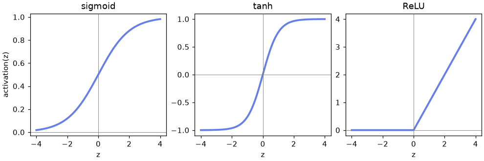
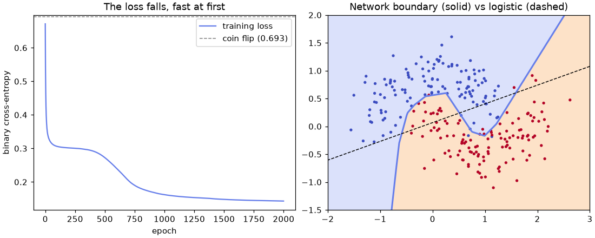

🧠 Lesson 10.1: Neural Networks from Scratch
Open the black box: build a small neural network with nothing but NumPy, train it with gradients you derive yourself, and then watch PyTorch compute the very same gradients automatically.
🎯 Learning Objectives
By the end of this lesson, you will be able to:
- Describe a neuron as a weighted sum plus a bias passed through an activation, and compute one by hand
- Write the forward pass of a one-hidden-layer network with matrix shapes that line up
- Explain cross-entropy loss, gradient descent and the learning rate, and implement backpropagation for a small network
- Check hand-written gradients numerically, and reproduce them with PyTorch's autograd
- Judge a network honestly against a baseline, logistic regression and gradient boosting on tabular data
In This Lesson
🧭 From Logistic Regression to a Network
Neural networks power image recognition, translation and chatbots, and they have a reputation for being mysterious. They are not. You already know the main ingredient: logistic regression, from Lesson 3.1, multiplies each feature by a weight, adds them up with a bias, and squashes the total into a probability. A neural network is many of those little units, stacked so that some of them feed others. Everything else in this lesson is about how such a stack learns its weights.
💡 Mental Model: A Panel of Junior Analysts
Picture Pinecrest's churn question handed to a panel. Each junior analyst looks at the raw customer numbers and writes down one score of their own: one notices "long gap since the last order", another "lots of discounts and support tickets". Nobody tells them what to look for. A senior analyst reads only the juniors' scores and makes the final call. During training, every analyst gets feedback on how much their score contributed to the final mistake, and adjusts. The juniors are the hidden layer; the senior is the output layer; the feedback is backpropagation.
Why bother? Logistic regression draws one straight boundary through the data. The juniors can each draw their own boundary, and the senior can combine them, so the network can bend its decision boundary around curved or interacting patterns, like the churn threshold near 150 days or the support-tickets effect that only applies to non-app users.
Deep learning frameworks hide all of this behind one line of code. You will use those frameworks from Lesson 10.2 on. Building one network by hand first is worth the effort: when training goes wrong later (a loss that explodes, a model that predicts the same thing for everyone), you will know which moving part to suspect.
⚙️ One Neuron
A neuron (or unit) takes a row of inputs x, multiplies them by its weights w, adds a bias b, and passes the result z through an activation function:
output = activation(x · w + b)
import numpy as np
x = np.array([0.5, -1.2, 2.0]) # one customer: three scaled features
w = np.array([0.8, 0.1, -0.4]) # one weight per feature
b = 0.2 # the bias
def sigmoid(z):
return 1 / (1 + np.exp(-z))
z = x @ w + b
print(f"weighted sum z = {z:.3f}")
print(f"sigmoid(z) = {sigmoid(z):.3f}")
print(f"ReLU(z) = max(0,z) = {max(0.0, z):.3f}")Output
weighted sum z = -0.320
sigmoid(z) = 0.421
ReLU(z) = max(0,z) = 0.000Check the arithmetic: 0.5 × 0.8 + (-1.2) × 0.1 + 2.0 × (-0.4) + 0.2 = -0.32. With a sigmoid activation this neuron is logistic regression: it outputs a probability of 0.42. The activation is the only thing that changes between neuron types.
🎚️ Activation Functions
Three activations cover almost everything you will meet in this module:
import matplotlib.pyplot as plt
z_grid = np.linspace(-4, 4, 200)
activations = {"sigmoid": sigmoid(z_grid), "tanh": np.tanh(z_grid), "ReLU": np.maximum(0, z_grid)}
fig, axes = plt.subplots(1, 3, figsize=(9, 3), layout="constrained")
for ax, (name, values) in zip(axes, activations.items()):
ax.plot(z_grid, values, color="#667eea", linewidth=2.5, label=name)
ax.axhline(0, color="gray", linewidth=0.6)
ax.axvline(0, color="gray", linewidth=0.6)
ax.set_title(name)
ax.set_xlabel("z")
axes[0].set_ylabel("activation(z)")
plt.show()
| Activation | Output range | Where it is used |
|---|---|---|
| sigmoid | 0 to 1 | The output of a yes-or-no classifier: it turns a score into a probability. |
| tanh | -1 to 1 | Hidden layers of older networks and inside recurrent networks (Lesson 10.4). |
| ReLU | 0 to infinity | The default for hidden layers: cheap, and its slope is 1 wherever it is active, so gradients pass through undiminished. |
⚠️ Why Not Skip the Activation?
Without an activation, a hidden layer is just a matrix multiplication, and two matrix multiplications in a row are still one matrix multiplication. A ten-layer network with no activations can draw only a straight boundary, exactly like logistic regression. The bend in ReLU, simple as it is, is what lets a network bend its boundary. (Exercise 2 lets you see this.)
The flat ends of sigmoid and tanh matter too: where a curve is flat its slope is nearly zero, and, as you will see in the backpropagation section, learning is driven by slopes. Stacks of sigmoid layers learned very slowly for exactly this reason (the vanishing gradient problem), which is a big part of why ReLU became the default.
🧮 A Layer Is a Matrix Multiplication
To see a network do something logistic regression cannot, use a small toy dataset with a curved boundary: make_moons draws two interleaving half-circles with some noise. Two features, so you can plot everything.
from sklearn.datasets import make_moons
from sklearn.model_selection import train_test_split
from sklearn.linear_model import LogisticRegression
X, y = make_moons(n_samples=1000, noise=0.25, random_state=42)
X_train, X_test, y_train, y_test = train_test_split(X, y, test_size=0.25, stratify=y, random_state=42)
print(X_train.shape, X_test.shape, y_train[:10])
linear = LogisticRegression().fit(X_train, y_train)
print(f"logistic regression test accuracy: {linear.score(X_test, y_test):.3f}")Output
(750, 2) (250, 2) [1 0 1 0 0 0 0 0 1 0]
logistic regression test accuracy: 0.896The straight-line model gets about 90%: the moons are mostly separable by a line, but the tips of each moon reach past it. That remaining 10% is the network's target. (Both features already sit between about -1.5 and 2.5, so this toy set needs no scaling; real data does.)
Now the network from the diagram, but with 16 hidden units. Instead of looping over neurons, a whole layer is one matrix multiplication: if X has one row per sample, X @ W1 computes every hidden unit's weighted sum for every sample at once.
| Step | Code | Shape (n samples) |
|---|---|---|
| Input | X | (n, 2) |
| Hidden weighted sums | z1 = X @ W1 + b1 | (n, 2) @ (2, 16) → (n, 16) |
| Hidden activations | a1 = relu(z1) | (n, 16) |
| Output score | z2 = a1 @ W2 + b2 | (n, 16) @ (16, 1) → (n, 1) |
| Probability | p = sigmoid(z2) | (n, 1), flattened to (n,) |
The rule to remember: the inner dimensions must match, and the result takes the outer ones. The bias b1 has shape (16,) and NumPy broadcasting adds it to every row. Computing outputs from inputs like this is called the forward pass.
def init_params(n_in, n_hidden, rng):
return {
"W1": rng.normal(0, np.sqrt(2 / n_in), size=(n_in, n_hidden)),
"b1": np.zeros(n_hidden),
"W2": rng.normal(0, np.sqrt(1 / n_hidden), size=(n_hidden, 1)),
"b2": np.zeros(1),
}
def forward(params, X):
z1 = X @ params["W1"] + params["b1"] # (n, hidden)
a1 = np.maximum(0, z1) # ReLU
z2 = a1 @ params["W2"] + params["b2"] # (n, 1)
p = sigmoid(z2).ravel() # (n,) probabilities
return p, (X, z1, a1) # keep the pieces for the backward pass
params = init_params(2, 16, np.random.default_rng(42))
for name, value in params.items():
print(f"{name}: shape {value.shape}")
p, cache = forward(params, X_train[:5])
print("first five probabilities:", p.round(3))Output
W1: shape (2, 16)
b1: shape (16,)
W2: shape (16, 1)
b2: shape (1,)
first five probabilities: [0.705 0.587 0.59 0.596 0.413]The untrained network outputs probabilities between about 0.4 and 0.7 with no rhyme or reason: random weights, random opinions. Two details in init_params are deliberate:
- The weights start random, not zero. If every hidden unit started with the same weights, they would all compute the same thing and receive the same feedback forever (mistake 3 shows it). Randomness breaks the tie. The seed (
default_rng(42)) makes the random start, and therefore every number on this page, repeatable. - The spread
sqrt(2 / n_in)is He initialization, designed for ReLU layers: it keeps the size of the signal roughly constant from layer to layer. Too large a spread and the outputs saturate; too small and the signal fades. PyTorch picks a sensible default for you (Lesson 10.2).
🔑 Key Terms
Parameters: the weights and biases the network learns (here 2×16 + 16 + 16×1 + 1 = 65). Hidden layer: a layer between input and output. Width: units per layer. Depth: number of layers. Forward pass: computing the output from the input. Multilayer perceptron (MLP): the name for this kind of fully connected network.
📉 Loss and Gradient Descent
To improve, the network needs one number that says how wrong it is: the loss. For a yes-or-no target the standard choice is binary cross-entropy (also called log loss), the same quantity logistic regression minimizes:
loss = -mean( y·log(p) + (1 - y)·log(1 - p) )
Read it one row at a time. For a churner (y = 1) only -log(p) counts: near 0 when the network says p = 0.99, huge when it confidently says p = 0.01. Cross-entropy punishes confident mistakes much harder than timid ones, which is exactly the pressure you want.
def bce_loss(p, y, eps=1e-12):
p = np.clip(p, eps, 1 - eps) # avoid log(0)
return -np.mean(y * np.log(p) + (1 - y) * np.log(1 - p))
p, cache = forward(params, X_train)
print(f"untrained network loss: {bce_loss(p, y_train):.4f}")
print(f"always guessing 0.5: {bce_loss(np.full(len(y_train), 0.5), y_train):.4f}")Output
untrained network loss: 0.6714
always guessing 0.5: 0.6931The untrained network (0.671) is barely better than a coin flip, whose loss is log(2) = 0.6931. Remember 0.693: when a binary classifier's loss sits at that value and refuses to move, it has learned nothing.
⛰️ Walking Downhill
The loss is a function of all 65 parameters. Picture it as a landscape with a valley somewhere; training means walking downhill. The gradient is the list of slopes of the loss with respect to each parameter: it points uphill, so you step the other way. Gradient descent repeats one rule:
parameter = parameter - learning_rate × gradient
The learning rate sets the step size. Here is the rule on a landscape with a single parameter, loss = (w - 3)², whose slope is 2(w - 3) and whose valley is at w = 3:
w = 0.0
learning_rate = 0.1
for step in range(1, 26):
grad = 2 * (w - 3) # slope of (w - 3)**2 at the current w
w = w - learning_rate * grad # step downhill
if step in (1, 2, 3, 5, 10, 25):
print(f"step {step:2d} w = {w:.4f} loss = {(w - 3) ** 2:.6f}")Output
step 1 w = 0.6000 loss = 5.760000
step 2 w = 1.0800 loss = 3.686400
step 3 w = 1.4640 loss = 2.359296
step 5 w = 2.0170 loss = 0.966368
step 10 w = 2.6779 loss = 0.103763
step 25 w = 2.9887 loss = 0.000128Big steps at first, where the slope is steep, then smaller and smaller ones as the ground flattens near the bottom. Nobody told the loop where the valley is; the slope alone led it there. A neural network does the same thing in 65 dimensions (or 65 billion). Too small a learning rate and the walk takes forever; too large and each step overshoots the valley and can bounce out of it (exercise 3).
🔁 Backpropagation
Gradient descent needs the slope of the loss for every parameter. Backpropagation computes all of them in one sweep backwards through the network, using the chain rule from calculus: if the loss depends on z2, and z2 depends on W2, then the slope for W2 is (slope of loss w.r.t. z2) × (slope of z2 w.r.t. W2). Each layer receives the error signal from the layer after it, uses it to compute its own parameters' gradients, and passes a signal back to the layer before. That is the senior analyst handing feedback down to the juniors.
One piece of luck makes the output layer easy: for a sigmoid followed by cross-entropy, the slope of the loss with respect to the score z2 simplifies to p - y (divided by n, because the loss is a mean). The predicted probability minus the truth: positive if the network said too much, negative if too little. The rest is matrix multiplication with the shapes reversed:
def backward(params, cache, p, y):
X, z1, a1 = cache
n = len(y)
dz2 = ((p - y) / n).reshape(-1, 1) # (n, 1): slope of the loss w.r.t. z2
grads = {"W2": a1.T @ dz2, # (16, n) @ (n, 1) -> (16, 1)
"b2": dz2.sum(axis=0)}
da1 = dz2 @ params["W2"].T # (n, 1) @ (1, 16) -> (n, 16): error sent back
dz1 = da1 * (z1 > 0) # ReLU passes the error only where it was active
grads["W1"] = X.T @ dz1 # (2, n) @ (n, 16) -> (2, 16)
grads["b1"] = dz1.sum(axis=0)
return grads
grads = backward(params, cache, p, y_train)
for name, g in grads.items():
print(f"{name}: gradient shape {g.shape} (parameter shape {params[name].shape})")Output
W2: gradient shape (16, 1) (parameter shape (16, 1))
b2: gradient shape (1,) (parameter shape (1,))
W1: gradient shape (2, 16) (parameter shape (2, 16))
b1: gradient shape (16,) (parameter shape (16,))Every gradient has exactly the shape of its parameter, which is the first sanity check for any backward pass. Notice the ReLU line: the slope of ReLU is 1 where z1 was positive and 0 where it was not, so a hidden unit that was "off" for a customer passes no blame back for that customer.
🔍 Check the Calculus Numerically
Hand-derived gradients are easy to get subtly wrong, and a wrong gradient does not crash: the network just learns badly. The classic check is to nudge one weight up and down by a tiny amount and measure how the loss changes. That ratio is the slope, computed without any calculus:
eps = 1e-6
i, j = 0, 3 # check one weight: W1[0, 3]
original = params["W1"][i, j]
params["W1"][i, j] = original + eps
loss_plus = bce_loss(forward(params, X_train)[0], y_train)
params["W1"][i, j] = original - eps
loss_minus = bce_loss(forward(params, X_train)[0], y_train)
params["W1"][i, j] = original # put it back
numeric = (loss_plus - loss_minus) / (2 * eps)
print(f"backprop gradient: {grads['W1'][i, j]:.8f}")
print(f"numeric gradient: {numeric:.8f}")Output
backprop gradient: -0.02341771
numeric gradient: -0.02341771They agree to many decimal places. Why not always use the numeric version, then? It needs two full forward passes per parameter; backpropagation gets every gradient for roughly the cost of one forward pass. For a model with millions of parameters that difference is everything.
🏃 Training the Network
Training is the four steps in a loop: forward, loss, backward, update. One pass over the training data is an epoch. This loop uses the whole training set in every step (full-batch gradient descent), which is fine for 750 rows; Lesson 10.2 switches to small random batches.
def train(params, X, y, learning_rate=0.5, epochs=2000, report_every=400):
history = []
for epoch in range(1, epochs + 1):
p, cache = forward(params, X) # 1. forward
history.append(bce_loss(p, y)) # 2. loss
grads = backward(params, cache, p, y) # 3. backward
for name in params: # 4. update every parameter
params[name] -= learning_rate * grads[name]
if report_every and epoch % report_every == 0:
print(f"epoch {epoch:4d} loss {history[-1]:.4f}")
return history
params = init_params(2, 16, np.random.default_rng(42))
history = train(params, X_train, y_train)
p_test, _ = forward(params, X_test)
print(f"network test accuracy: {((p_test > 0.5) == y_test).mean():.3f}")Output
epoch 400 loss 0.2924
epoch 800 loss 0.1811
epoch 1200 loss 0.1547
epoch 1600 loss 0.1467
epoch 2000 loss 0.1432
network test accuracy: 0.972The loss falls from 0.69 (coin flip) and the network beats logistic regression's 0.896 on the test set. Plot the loss curve and the decision boundary of both models to see why:
xx, yy = np.meshgrid(np.linspace(-2, 3, 300), np.linspace(-1.5, 2, 300))
grid = np.column_stack([xx.ravel(), yy.ravel()])
p_grid, _ = forward(params, grid)
fig, (ax_loss, ax_map) = plt.subplots(1, 2, figsize=(10, 4), layout="constrained")
ax_loss.plot(history, color="#667eea", label="training loss")
ax_loss.axhline(np.log(2), color="gray", linestyle="--", linewidth=1, label="coin flip (0.693)")
ax_loss.set_xlabel("epoch")
ax_loss.set_ylabel("binary cross-entropy")
ax_loss.set_title("The loss falls, fast at first")
ax_loss.legend()
ax_map.contourf(xx, yy, p_grid.reshape(xx.shape), levels=[0, 0.5, 1], colors=["#dbe1fb", "#fde2c8"])
ax_map.contour(xx, yy, p_grid.reshape(xx.shape), levels=[0.5], colors="#667eea", linewidths=2)
ax_map.contour(xx, yy, linear.predict_proba(grid)[:, 1].reshape(xx.shape), levels=[0.5],
colors="black", linestyles="--", linewidths=1)
ax_map.scatter(X_test[:, 0], X_test[:, 1], c=y_test, cmap="coolwarm", s=12, edgecolor="none")
ax_map.set_title("Network boundary (solid) vs logistic (dashed)")
plt.show()
✅ You Just Built Deep Learning's Engine
Forward pass, loss, backward pass, update. Every network in Module 10, including the image and sequence models, trains with exactly this loop. What changes is the shape of the layers, the size of the data, and who writes the backward pass.
🤖 Autograd: Let PyTorch Do the Calculus
Writing backward by hand was manageable for two layers. For a network with twenty layers of different kinds it would be a nightmare. Automatic differentiation (autograd) removes that job: you write only the forward pass, and the library records every operation as it runs, then replays the record backwards applying the chain rule for you. PyTorch's version takes one flag and one method call:
import torch
w = torch.tensor(0.0, requires_grad=True) # "track every operation on w"
loss = (w - 3) ** 2
loss.backward() # chain rule, automatically
print(w.grad)Output
tensor(-6.)The slope of (w - 3)² at w = 0 is 2 × (0 - 3) = -6, exactly what the walking-downhill loop computed by hand. A torch.tensor is PyTorch's array (Lesson 10.2 covers tensors properly); requires_grad=True asks PyTorch to remember how every result was computed from it, and .backward() fills in .grad.
🔬 Same Network, Same Gradients
Now the real test. Copy the network's starting weights into PyTorch tensors, write the forward pass with PyTorch functions, and let autograd compute the gradients. If your hand-written backward is right, the two sets of gradients must agree:
import torch.nn.functional as F
params = init_params(2, 16, np.random.default_rng(42)) # a fresh copy of the start weights
t_params = {name: torch.tensor(value, requires_grad=True) for name, value in params.items()}
X_train_t = torch.tensor(X_train) # float64, like NumPy
y_train_t = torch.tensor(y_train, dtype=torch.float64)
def forward_torch(tp, X):
a1 = torch.relu(X @ tp["W1"] + tp["b1"])
return torch.sigmoid(a1 @ tp["W2"] + tp["b2"]).squeeze(1)
loss_t = F.binary_cross_entropy(forward_torch(t_params, X_train_t), y_train_t)
loss_t.backward()
p, cache = forward(params, X_train)
grads = backward(params, cache, p, y_train)
print(f"loss: NumPy {bce_loss(p, y_train):.6f} PyTorch {loss_t.item():.6f}")
for name in params:
gap = np.abs(t_params[name].grad.numpy() - grads[name]).max()
print(f"{name}: largest gradient difference {gap:.1e}")Output (yours may vary slightly)
loss: NumPy 0.671389 PyTorch 0.671389
W1: largest gradient difference 6.9e-18
b1: largest gradient difference 4.2e-17
W2: largest gradient difference 5.6e-17
b2: largest gradient difference 0.0e+00Differences around 10-17 are floating-point rounding: the gradients are the same. Your backpropagation was right, and from now on you never have to write one again. (The tiny digits can differ on another computer, which is why this card says "may vary".)
🔄 The Training Loop with Autograd
Training with autograd keeps the same four steps; only step 3 changes from your function to loss.backward(). Two new lines need explaining, and both come back in every PyTorch training loop you will write:
t_params = {name: torch.tensor(value, requires_grad=True)
for name, value in init_params(2, 16, np.random.default_rng(42)).items()}
for epoch in range(1, 2001):
loss = F.binary_cross_entropy(forward_torch(t_params, X_train_t), y_train_t) # 1-2. forward, loss
loss.backward() # 3. backward
with torch.no_grad(): # 4. update
for tensor in t_params.values():
tensor -= 0.5 * tensor.grad
tensor.grad.zero_()
if epoch % 400 == 0:
print(f"epoch {epoch:4d} loss {loss.item():.4f}")
with torch.no_grad():
p_test_t = forward_torch(t_params, torch.tensor(X_test)).numpy()
print(f"autograd network test accuracy: {((p_test_t > 0.5) == y_test).mean():.3f}")Output (yours may vary slightly)
epoch 400 loss 0.2924
epoch 800 loss 0.1811
epoch 1200 loss 0.1547
epoch 1600 loss 0.1467
epoch 2000 loss 0.1432
autograd network test accuracy: 0.972with torch.no_grad():the update itself must not be recorded as part of the next forward pass, so it runs with tracking switched off. The same block wraps predictions on new data, where no gradients are needed.tensor.grad.zero_(): PyTorch adds new gradients to.gradinstead of replacing them (useful for advanced tricks, a trap for everyone else). Forget to reset it and every step uses the sum of all previous gradients (mistake 4).
Same starting weights, same learning rate, same math: the losses and the accuracy match the NumPy run. Lesson 10.2 replaces the remaining hand-written parts with PyTorch's building blocks: nn.Linear layers instead of a dictionary of weights, an optimizer instead of the update loop, and a DataLoader for mini-batches.
💡 Scaling Up
Everything here runs in a few seconds on a laptop CPU. Deep learning gets expensive when the data (millions of images) and the networks (millions of parameters) grow, and that is when a GPU, which does thousands of multiplications in parallel, pays off. The code barely changes: in PyTorch you move the tensors to the GPU with .to("cuda"). This course stays on the CPU, with small data and few epochs.
⚠️ Common Mistakes
Neural networks fail in two ways: loudly, with a shape error, and quietly, with a network that trains but learns nothing. The quiet ones cost more time, so learn their symptoms.
1. Weight Matrix the Wrong Way Round
W1_wrong = np.random.default_rng(42).normal(size=(16, 2)) # (hidden, inputs): transposed
z1 = X_train @ W1_wrongError
ValueError: matmul: Input operand 1 has a mismatch in its core dimension 0, with gufunc signature (n?,k),(k,m?)->(n?,m?) (size 16 is different from 2)What it means: X_train is (750, 2) and the weight matrix is (16, 2); the inner dimensions (2 and 16) do not match. "Core dimension 0 ... 16 is different from 2" is NumPy's way of saying exactly that. Fix: write the shapes down next to each line, as the lesson's code does in comments. With this course's convention, weights are (inputs, outputs).
2. A Learning Rate That Is Far Too Large
wild = init_params(2, 16, np.random.default_rng(42))
wild_history = train(wild, X_train, y_train, learning_rate=50, epochs=2000, report_every=500)Output (no error, and that is the problem)
epoch 500 loss 4.0383
epoch 1000 loss 7.3734
epoch 1500 loss 2.9964
epoch 2000 loss 1.8398What happened: every step overshoots the valley, so the loss jumps around instead of falling, and it ends far above the 0.14 a sensible learning rate reached. In the notebook you may also see RuntimeWarning: overflow encountered in exp: the scores grew so large that np.exp overflowed. With other settings the loss climbs to nan instead. Nothing crashes. Fix: always look at the loss curve. If it bounces or explodes, divide the learning rate by 10 and try again.
3. Starting All Weights at Zero
zeros = {name: np.zeros_like(value) for name, value in init_params(2, 16, np.random.default_rng(42)).items()}
zero_history = train(zeros, X_train, y_train, report_every=1000)
print(f"test accuracy: {((forward(zeros, X_test)[0] > 0.5) == y_test).mean():.3f}")
print("W1 after training is still all zeros:", np.all(zeros["W1"] == 0))Output (no error, and that is the problem)
epoch 1000 loss 0.6931
epoch 2000 loss 0.6931
test accuracy: 0.500
W1 after training is still all zeros: TrueWhat happened: with all-zero weights every hidden unit outputs 0, ReLU passes no gradient, and only the output bias can move. The loss sits at 0.6931, the coin-flip value, and accuracy is 50%. Even a nonzero constant would fail differently: all units identical, receiving identical updates, so 16 units behave like one. Fix: random initialization (PyTorch layers do it for you).
4. Forgetting to Reset Gradients in PyTorch
w = torch.tensor(0.0, requires_grad=True)
for step in range(3):
loss = (w - 3) ** 2
loss.backward()
print(w.grad) # no w.grad.zero_() in this loopOutput (no error, and that is the problem)
tensor(-6.)
tensor(-12.)
tensor(-18.)What happened: the true slope is -6 every time, but .grad accumulates: -6, -12, -18. In a training loop that means ever larger, wrong steps. Fix: reset after each update with w.grad.zero_(), or, from Lesson 10.2 on, optimizer.zero_grad() at the start of each step.
5. Calling backward Twice on the Same Graph
w = torch.tensor(0.0, requires_grad=True)
loss = torch.sigmoid(w * 2) ** 2
loss.backward()
loss.backward()Error
RuntimeError: Trying to backward through the graph a second time (or directly access saved tensors after they have already been freed). Saved intermediate values of the graph are freed when you call .backward() or autograd.grad(). Specify retain_graph=True if you need to backward through the graph a second time or if you need to access saved tensors after calling backward.What it means: to save memory, PyTorch throws away the intermediate values recorded during the forward pass as soon as backward has used them. Fix: recompute the loss (run the forward pass again) before each backward, which is what a training loop does naturally. The retain_graph=True the message suggests is for rare special cases, not for fixing a loop.
6. Turning a Tracked Tensor into NumPy
probabilities = forward_torch(t_params, torch.tensor(X_test))
probabilities.numpy()Error
RuntimeError: Can't call numpy() on Tensor that requires grad. Use tensor.detach().numpy() instead.What it means: the result still carries its gradient history, and NumPy arrays cannot. Fix: make predictions inside with torch.no_grad(): (the lesson does this) or call .detach().numpy(), as the message says.
🛠️ Project: A Churn Network from Scratch
Time to point your hand-built network at Pinecrest's churn problem and judge it honestly. You will train the NumPy network on the ten numeric features from Lesson 1.1, then compare it with a do-nothing baseline, logistic regression and a gradient-boosting model. Continue in the notebook you used for the lesson: the project reuses init_params, forward, bce_loss, backward and train. Allow about 35 minutes.
🛠️ Step 1: Load, split and scale (5 min)
Use the course's standard churn split. Networks are as sensitive to feature scale as logistic regression is, so fit a StandardScaler on the training rows only. The network functions expect NumPy arrays, so convert the targets with .to_numpy().
import pandas as pd
from sklearn.preprocessing import StandardScaler
customers = pd.read_csv("data/customers_churn.csv")
features = ["tenure_months", "orders_12m", "spend_12m", "avg_order_value", "days_since_last_order",
"returns_12m", "return_rate", "support_tickets_12m", "discount_share", "app_user"]
Xc_train, Xc_test, yc_train, yc_test = train_test_split(
customers[features], customers["churned"], test_size=0.25, stratify=customers["churned"], random_state=42
)
scaler = StandardScaler().fit(Xc_train)
A_train, A_test = scaler.transform(Xc_train), scaler.transform(Xc_test)
b_train, b_test = yc_train.to_numpy(), yc_test.to_numpy()
print(A_train.shape, A_test.shape, f"churn rate {b_train.mean():.3f}")Output
(4500, 10) (1500, 10) churn rate 0.165🛠️ Step 2: The yardsticks (5 min)
Before training anything new, record what a baseline and logistic regression achieve. Use ROC AUC (Lesson 1.4) as the main measure: the care team needs a good ranking of customers, and AUC measures exactly that.
from sklearn.dummy import DummyClassifier
from sklearn.metrics import roc_auc_score
results = {}
for name, model in [("baseline", DummyClassifier(strategy="most_frequent")), ("logistic regression", LogisticRegression())]:
model.fit(A_train, b_train)
results[name] = (model.score(A_test, b_test), roc_auc_score(b_test, model.predict_proba(A_test)[:, 1]))
print(f"{name:20s} accuracy {results[name][0]:.3f} ROC AUC {results[name][1]:.3f}")Output
baseline accuracy 0.835 ROC AUC 0.500
logistic regression accuracy 0.848 ROC AUC 0.823🛠️ Step 3: Train the network (10 min)
Ten inputs, 16 hidden ReLU units, one sigmoid output: 193 parameters. Train for 1,000 full-batch epochs with a learning rate of 0.5. Expect a few seconds.
churn_net = init_params(10, 16, np.random.default_rng(42))
churn_history = train(churn_net, A_train, b_train, learning_rate=0.5, epochs=1000, report_every=200)
n_params = sum(value.size for value in churn_net.values())
print(f"parameters: {n_params}")Output
epoch 200 loss 0.3204
epoch 400 loss 0.3088
epoch 600 loss 0.3050
epoch 800 loss 0.3018
epoch 1000 loss 0.2994
parameters: 193The loss starts at about 0.69 (coin flip), and drops well below the 0.45 that simply predicting the 16.5% churn rate for everyone would score. It is still falling slowly at epoch 1,000; how long to keep going is a question the validation set answers in Lesson 10.2.
🛠️ Step 4: Evaluate on the test set (5 min)
Score the network exactly like the other models: accuracy at a 0.5 cut-off, and ROC AUC on its probabilities.
p_churn, _ = forward(churn_net, A_test)
results["neural network"] = (((p_churn > 0.5) == b_test).mean(), roc_auc_score(b_test, p_churn))
for name, (acc, auc) in results.items():
print(f"{name:20s} accuracy {acc:.3f} ROC AUC {auc:.3f}")Output
baseline accuracy 0.835 ROC AUC 0.500
logistic regression accuracy 0.848 ROC AUC 0.823
neural network accuracy 0.855 ROC AUC 0.856The network clearly beats logistic regression on AUC. That is the hidden layer at work: the churn effects in this data are partly thresholds and interactions (recency matters mostly beyond about 150 days; support tickets matter for non-app users), and a straight-line model can only approximate them.
🛠️ Step 5: The honest comparison (5 min)
A network beating logistic regression is not the end of the story. For tables of rows and columns, the strongest standard tool is gradient boosting (Lesson 5.3). Train one with its default settings on the same data:
from sklearn.ensemble import HistGradientBoostingClassifier
boost = HistGradientBoostingClassifier(random_state=42).fit(A_train, b_train)
results["gradient boosting"] = (boost.score(A_test, b_test), roc_auc_score(b_test, boost.predict_proba(A_test)[:, 1]))
print(f"{'gradient boosting':20s} accuracy {results['gradient boosting'][0]:.3f} ROC AUC {results['gradient boosting'][1]:.3f}")Output
gradient boosting accuracy 0.872 ROC AUC 0.858Boosting matches or edges out your network with zero tuning, no scaling needed, and one line of code. Your network needed a learning rate, a width, an epoch count and an initialization scheme, all chosen by trial. That is the typical picture for tabular data, and the reason the professional default for a churn table is gradient boosting, not deep learning.
🛠️ Step 6: Save the weights and write the summary (5 min)
A trained network is just its parameter arrays. Save them with np.savez, load them back, and confirm the reloaded network predicts exactly the same probabilities. Then print a short summary from your own variables.
np.savez("churn_net.npz", **churn_net)
with np.load("churn_net.npz") as saved:
reloaded = {name: saved[name] for name in saved.files}
print("same predictions after reload:", np.array_equal(forward(reloaded, A_test)[0], p_churn))
best = max(results, key=lambda name: results[name][1])
print(f"""Churn network from scratch
Architecture : 10 inputs, 16 ReLU units, 1 sigmoid output ({n_params} parameters)
Final loss : {churn_history[-1]:.4f} (coin flip 0.6931)
Network AUC : {results['neural network'][1]:.3f} (logistic regression {results['logistic regression'][1]:.3f})
Best AUC : {best} ({results[best][1]:.3f})""")Output
same predictions after reload: True
Churn network from scratch
Architecture : 10 inputs, 16 ReLU units, 1 sigmoid output (193 parameters)
Final loss : 0.2994 (coin flip 0.6931)
Network AUC : 0.856 (logistic regression 0.823)
Best AUC : gradient boosting (0.858)Remember to save the fitted scaler too, in a real project: the network only understands features scaled with the training set's means and standard deviations. Lesson 10.2 saves PyTorch models the standard way.
✅ Project Completion Checklist
- The scaler was fitted on the 4,500 training customers only
- You recorded the baseline and logistic regression accuracy and ROC AUC before training the network
- Your network's loss fell from about 0.69 and its test AUC beat logistic regression's
- You compared the network with gradient boosting and can say which you would ship, and why
churn_net.npzreloads to exactly the same predictions
🏋️ Hands-on Exercises
These continue in the same notebook, so the moons data, the churn arrays and all the network functions exist.
🏋️ Exercise 1: A Neuron by Hand
A neuron has weights [0.5, -0.25] and bias 0.1. For the input [2.0, 4.0], work out on paper the weighted sum z, then ReLU(z) and sigmoid(z). Then check your answers with NumPy. Repeat for the input [2.0, 0.0].
💡 Hint
z = 2.0 × 0.5 + 4.0 × (-0.25) + 0.1. ReLU of a negative number is 0; sigmoid of 0 is exactly 0.5.
✅ Solution
ex_w = np.array([0.5, -0.25])
for ex_x in ([2.0, 4.0], [2.0, 0.0]):
ex_z = np.array(ex_x) @ ex_w + 0.1
print(f"x={ex_x} z={ex_z:.2f} ReLU={max(0.0, ex_z):.2f} sigmoid={sigmoid(ex_z):.3f}")Output
x=[2.0, 4.0] z=0.10 ReLU=0.10 sigmoid=0.525
x=[2.0, 0.0] z=1.10 ReLU=1.10 sigmoid=0.750For the first input, z = 1.0 - 1.0 + 0.1 = 0.1: just positive, so ReLU passes it and the sigmoid is barely above 0.5. For the second, z = 1.1 and both outputs grow. A ReLU unit with a negative z would output 0 and pass no gradient back for that row.
🏋️ Exercise 2: How Many Hidden Units?
Train the moons network with 1, 2, 4 and 16 hidden units (1,000 epochs, learning rate 0.5, report_every=0 to keep it quiet) and print each one's test accuracy. Then answer: why can a network with one ReLU unit do no better than logistic regression?
💡 Hint
Call init_params(2, h, np.random.default_rng(42)) inside a loop over h, then train(...), then forward(...) on X_test.
✅ Solution
for h in [1, 2, 4, 16]:
net = init_params(2, h, np.random.default_rng(42))
train(net, X_train, y_train, learning_rate=0.5, epochs=1000, report_every=0)
acc = ((forward(net, X_test)[0] > 0.5) == y_test).mean()
print(f"{h:2d} hidden units: test accuracy {acc:.3f}")Output
1 hidden units: test accuracy 0.904
2 hidden units: test accuracy 0.928
4 hidden units: test accuracy 0.968
16 hidden units: test accuracy 0.964One ReLU unit computes one weighted sum, so the boundary is still a single straight line, and the accuracy lands next to logistic regression's 0.896. Each extra unit adds another line the output can combine, and a handful is enough to wrap around the moons. Width is capacity: more units can fit more complicated shapes, and also more noise.
🏋️ Exercise 3: Learning-Rate Sweep
Train the moons network (16 hidden units) for only 300 epochs with learning rates 0.01, 0.1, 1 and 10. Print the final training loss for each. Which is too timid, which is about right, and does 10 still work?
💡 Hint
train returns the loss history; its last element is the final loss.
✅ Solution
for lr in [0.01, 0.1, 1, 10]:
net = init_params(2, 16, np.random.default_rng(42))
lr_history = train(net, X_train, y_train, learning_rate=lr, epochs=300, report_every=0)
print(f"learning rate {lr:5}: final loss {lr_history[-1]:.4f}")Output
learning rate 0.01: final loss 0.4316
learning rate 0.1: final loss 0.3131
learning rate 1: final loss 0.2465
learning rate 10: final loss 0.28140.01 barely moves in 300 epochs: each step is tiny. 0.1 is better, and 1 gets lowest. At 10 the steps are big enough to overshoot, so it ends higher than 1 even though it is ten times bolder. There is no universal right value: the best learning rate depends on the data, the network and the optimizer, which is why it is the first hyperparameter people tune.
🏋️ Exercise 4: A Second Hidden Layer, Thanks to Autograd (Stretch)
Add a second hidden layer of 8 ReLU units to the churn network: 10 → 16 → 8 → 1. Writing the backward pass by hand would mean deriving two more gradients; instead, write only the forward pass in PyTorch and let autograd do the rest. Initialize every weight matrix with He initialization from torch.Generator().manual_seed(42), train for 1,000 full-batch epochs with learning rate 0.5, and compare the test ROC AUC with your one-layer network.
💡 Hint
Make a list of layer sizes [10, 16, 8, 1] and create one weight matrix and one bias per neighboring pair. torch.randn(n_in, n_out, generator=gen, dtype=torch.float64) * (2 / n_in) ** 0.5 gives He-initialized weights. Then follow the autograd training loop from the lesson.
✅ Solution
gen = torch.Generator().manual_seed(42)
sizes = [10, 16, 8, 1]
layers = []
for n_in, n_out in zip(sizes[:-1], sizes[1:]):
W = (torch.randn(n_in, n_out, generator=gen, dtype=torch.float64) * (2 / n_in) ** 0.5).requires_grad_()
b = torch.zeros(n_out, dtype=torch.float64, requires_grad=True)
layers.append((W, b))
def deep_forward(X):
a = X
for W, b in layers[:-1]:
a = torch.relu(a @ W + b)
W, b = layers[-1]
return torch.sigmoid(a @ W + b).squeeze(1)
A_train_t, b_train_t = torch.tensor(A_train), torch.tensor(b_train, dtype=torch.float64)
for epoch in range(1, 1001):
loss = F.binary_cross_entropy(deep_forward(A_train_t), b_train_t)
loss.backward()
with torch.no_grad():
for W, b in layers:
for tensor in (W, b):
tensor -= 0.5 * tensor.grad
tensor.grad.zero_()
with torch.no_grad():
p_deep = deep_forward(torch.tensor(A_test)).numpy()
print(f"final training loss: {loss.item():.4f}")
print(f"two hidden layers: ROC AUC {roc_auc_score(b_test, p_deep):.3f} (one layer: {results['neural network'][1]:.3f})")Output (yours may vary slightly)
final training loss: 0.2896
two hidden layers: ROC AUC 0.852 (one layer: 0.856)The deeper network lands in the same place as the one-layer network. Depth helps when the data has layered structure, such as edges forming shapes forming objects in images (Lesson 10.3). Ten tabular features rarely do, so extra layers mostly add training time and more settings to tune. Notice how little code the extra layer cost you: that is what autograd buys.
🎯 Quick Quiz
🎯 Check Your Understanding
Question 1: A batch X has shape (32, 10) and a layer's weights W have shape (10, 16). What is the shape of X @ W?
Question 2: A colleague removes every ReLU from a five-layer network, keeping only the final sigmoid. What kind of decision boundary can the network now draw?
Question 3: What does this print?
quiz_w = torch.tensor(1.0, requires_grad=True)
for _ in range(3):
quiz_loss = 2 * quiz_w
quiz_loss.backward()
print(quiz_w.grad)Question 4: Your training loss goes 0.69, 0.52, 3.10, 0.95, 4.80, nan. What is the most likely cause?
Question 5: Why does deep learning use backpropagation instead of the numeric nudge-each-weight check to compute gradients?
❓ Common Questions at This Stage
Is a neural network really like a brain?
Only loosely. The name comes from a 1940s model of a biological neuron (inputs, a threshold, an output), but modern networks are better understood as stacks of matrix multiplications and simple nonlinear functions, trained by calculus. The analogy is a useful story, not a description of how either works.
How many layers and units should I use?
There is no formula. Start small (one or two hidden layers of 16 to 128 units for tabular data), check the validation loss, and grow only if the model underfits. The architecture is a hyperparameter like any other, chosen with a validation set (Lesson 6.1's learning curves apply). Bigger is not automatically better: Exercise 4 added a layer and gained nothing.
Should I use neural networks for tabular data like churn?
Usually not as the first choice. On tables of rows and columns, gradient-boosted trees match or beat neural networks most of the time, with less tuning, no scaling and better behavior with missing values and categories, as your project showed. Networks shine on images, audio, text and sequences, where the raw input has structure that layers can learn (Lessons 10.3 to 10.5). A network can still be useful on tabular data as one member of an ensemble, or when a table is combined with text or images.
Do I need to remember the backpropagation formulas?
No. You will never write a backward pass by hand again: autograd does it. What is worth remembering is the idea (errors flow backwards, each layer's gradient depends on the layers after it, ReLU gates the flow) because it explains vanishing gradients, why initialization matters and why zero_grad exists.
🌟 Going Further: Bonus Challenge
Full-batch gradient descent uses all 4,500 customers for every step. Change train to mini-batch gradient descent: each epoch, shuffle the row order with rng.permutation, then take steps on batches of 64 rows. Compare the loss after 50 epochs with the full-batch loss after 50 epochs, and count the number of update steps each made. Why can mini-batches reach a low loss in fewer passes over the data? Lesson 10.2's DataLoader does this shuffling and batching for you.
📓 Learning Journal
Take five minutes to write in your learning journal (the journal.md file you started in Lesson 0.1, or a paper notebook). Jot down:
- Key concepts you learned today
- Techniques that clicked (and the ones that have not, yet)
- Questions or confusion to come back to
- Ideas to try on your own
- Progress and feelings: how did this lesson go for you?
✍️ This lesson's prompt: Explain the training loop (forward, loss, backward, update) to someone who has never seen code, using the panel of junior analysts. Then write one sentence on why your churn network beat logistic regression, and one on why you would still ship gradient boosting.
📝 Lesson Summary
🎓 Key Takeaways
- A neuron is
activation(x · w + b); with a sigmoid it is logistic regression - A layer is a matrix multiplication:
(n, inputs) @ (inputs, units)gives(n, units) - Nonlinear activations (ReLU in hidden layers) are what let a network bend its boundary
- Binary cross-entropy measures how wrong the probabilities are; 0.693 is the coin-flip value
- Gradient descent steps each parameter against its gradient, scaled by the learning rate
- Backpropagation gets every gradient in one backward sweep using the chain rule; a numeric check confirms it
- Autograd (
requires_grad,backward,.grad) computes the same gradients for you; reset.gradevery step and update undertorch.no_grad() - On tabular data like churn, a network can beat logistic regression but rarely beats gradient boosting
🏆 What You've Accomplished
- You built and trained a neural network with nothing but NumPy
- You derived backpropagation for it and verified the gradients two independent ways
- You saw a network's curved boundary beat a straight line on the moons data
- You trained a churn network, compared it honestly with three other models, and saved its weights
- You met six training failures and know the symptom of each
🔭 Looking Ahead
In Lesson 10.2: PyTorch Fundamentals you will rebuild today's network the way professionals do: tensors, nn.Module layers, a loss function and an optimizer from PyTorch, mini-batches from a DataLoader, a validation set to decide when to stop, and saving and loading the trained model.
📋 Before the Next Lesson
- Check that
import torch; print(torch.__version__)works in your environment (Lesson 0.1 installed it). - Without looking, write the four lines of the training loop from memory. Then compare with the lesson.
- Rerun the churn network with
np.random.default_rng(7)as the starting seed. How much does the test AUC change? That wobble is why Lesson 10.2 uses a validation set.
🌱 Encouragement for the Journey
You just did something many people who use deep learning every day have never done: you built the engine yourself, gradient by gradient, and proved it correct. If the backward pass still feels slippery, that is completely normal; it takes most people a few passes. What matters is that "neural network" is no longer a black box to you. Everything in the rest of this module is this same loop, made bigger and more convenient.